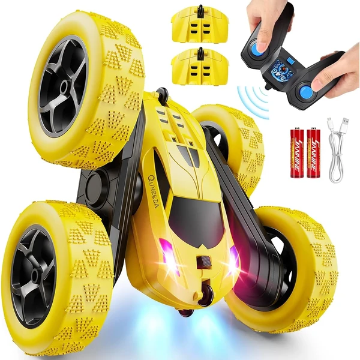

👶 10 años
QUNREDA Coche RC Stunt
Un coche de acrobacias 4WD con baterías modulares recargables por USB-C que se cambian sin herramientas. Nueve acrobacias distintas y control anti-interferencias de hasta 50 metros.
⭐
¿Por qué nos gusta?
- ✔Baterías modulares intercambiables por USB-C.
- ✔Nueve acrobacias distintas, incluidos giros de 360°.
- ✔Control estable de hasta 50 metros de alcance.
💬
Lo que más destacan las familias
Muchos padres coinciden en que poder cambiar la batería en segundos evita las esperas típicas de otros coches teledirigidos. La variedad de acrobacias también se valora porque mantiene el interés durante más tiempo.